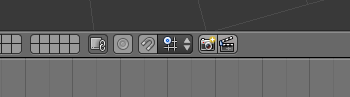

Boom Smash (no Blender) [no Maya, a designação é powerblast] ] é a renderização direta do conteúdo visível no editor 3D View (algo similar a um Screenshot) para efeitos de pré-visualização. Esta funcionalidade permite criar renders muito mais rápidos e extremamente úteis para testes. A renderização Boom Smash é feita a partir da perspetiva em que se encontra no editor 3D View. Por outras palavras, se pretende fazer um Boom Smash próximo do final, tem de se colocar a ver a cena através da câmara.
A renderização Boom Smash é feita através dos dois botões abaixo assinalados. Um é para um render fixo, o outro é para animação.
Pode ser útil ativar a opção Only Render (disponível na barra de propriedades do 3D view, dentro do painel Display) para apenas renderizar em Boom Smash os objetos que surgiriam num render normal (exemplo: os objetos de tipo lâmpada não serão visíveis no Boom Smash, tal como não são visíveis num render final).